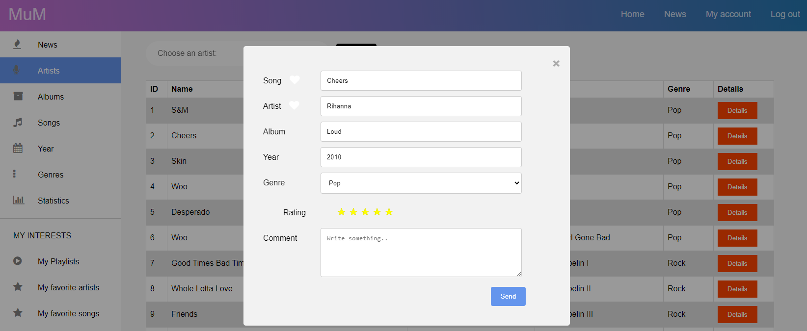

MuM sau Music Review Manager este o aplicatie care ajuta utilizatorii la gestionarea operelor muzicale in functie de mai multe criterii. Acesti utilizatori pot cauta piese noi dupa un anumit gen muzical sau de la un anume artist, pot cauta albume intregi si adauga piese noi in aplicatie. De asemnea, daca un utilizator crede ca poate imbunatatii aplicatia cu noi informatii, exista optiunea de a adauga comentarii la piese. Un alt sistem oferit de aplicatie e cel prin care se poate oferi note pieselor, si astfel va exista un rating de maxim 5 puncte.
Toate persoanele pot folosi aplicatia MuM, chiar daca au un cont sau nu, diferenta fiind in operatiunile limitate pe care un utilizator fara cont le are.
Atunci cand un utilizator acceseaza aplicatia, el este dus la pagina principala, unde are primul contact cu aplicatia si optiunea 'Search' iar apoi este trimis la pagina songs de unde poate vedea piesele aflate in sistem sau poate cauta dupa propriile criterii.
Aici e poate sa caute o piesa anume dupa anumite criterii: Artist, Albume, Numele piesei, Anul lansarii, Gen muzical sau poate accesa pagina News unde sunt ultimele piese inregistrate in sistem. In functie de ce doreste sa caute, ii va fi afisata o lista cu una sau mai multe piese.
Pentru mai multe informatii, utilizatorul trebuie sa apese butonul Details si o mica fereastra cu informatii despre acea piesa se deschide. In aceasta fereastra poate vedea: numele piesei, artistul, albumul din care face parte, anul lansarii, genul muzical si un text prin care i se recomanda sa-si faca un cont pentru a avea acces la mai multe optiuni ale aplicatiei. De asemena, daca apasa butonul MyPlaylist sau MyFavoriteSongs, va fi afisat mesajul 'You have to be logged in!' deoarece aplicatia nu are informatii care sa fie afisate fara un cont existent in sistem.
Astfel, utilizatorul poate apasa butonul Log In si este redirectionat la pagina prin care se poate conecta la aplicatie sau daca e cazul sa-si creeze un nou cont.
Pentru a crea un cont, utilizatorul trebuie sa furnizeze niste informatii legate de numele si prenumele lui, o adresa de email, un nume cu care se va loga pe aplicatie si o parola.
Dupa inregistrare el este automat logat pe aplicatie si o poate folosi in continuare. Ca si utilizator logat, poate da un rating unei piese de maxim 5 stele si adauga un comentariu. Din aceasta fereastra el mai poate adauga piesa sau artistul la favoriti pentru a vizualiza mia tarziu aceste informatii salvate.
Alte optiuni disponibile utilizatorului sunt cele de a vedea un playlist propriu creat de el, piesele favorite sau ultimele piese vazute.
De asemenea aplicatia permite si creare de conturi de tip admin, care au acces la baza de date si un panou special prin care poate adauga piese noi in sistem updata anumite date ale pieselor curente.